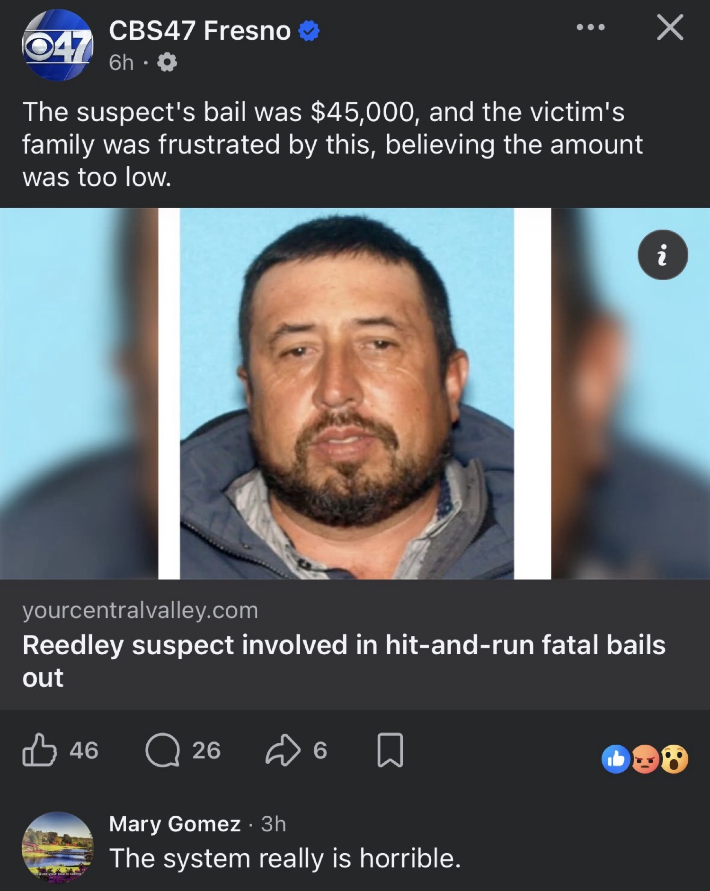
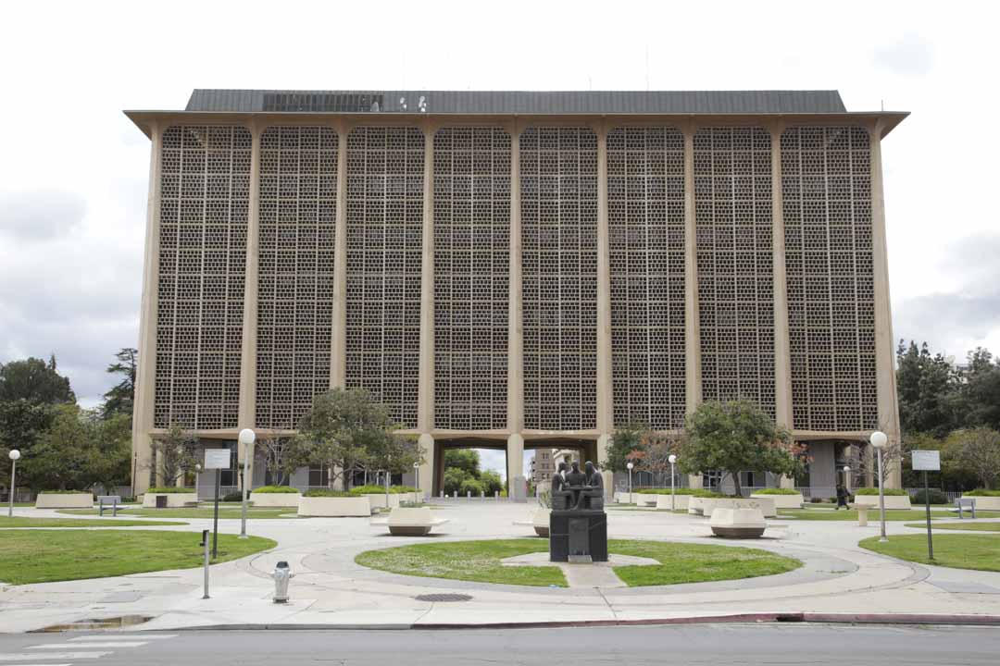

On the morning of July 28, 2026, a white Chevrolet Astro van struck two pedestrians at Manning and Haney avenues in Reedley. Luis Martinez Araujo, 75, and Maria Juarez Mendez, 78, died from their injuries. The driver left the scene. Within days investigators identified 48-year-old Omar Lopez Chavez of Reedley. He was located after the van was found near Kerman. He later surrendered at the Tijuana border crossing.
By early August the Fresno County Jail listed his bail at $45,000. The family of the victims publicly expressed shock. A son of one victim called the amount “just blows us away,” noting the suspect’s flight to Mexico made him a high flight risk. Under the county’s schedule the figure broke down roughly as $25,000 for vehicular manslaughter with gross negligence, $15,000 for hit-and-run resulting in death, plus $5,000 for the second victim. In Orange County the same charges can total closer to $150,000.
He posted bail. The system worked as written.
This piece does not claim corruption occurred. It starts from a hypothesis that it did, or that the outcome is indistinguishable from one that did, and then follows the second-order effects that would radiate outward.

The Soft Landing as Signal
First-order effects are visible and local. A family feels the justice system has already discounted two lives. Community members who followed the manhunt feel the resolution is incomplete. Local media records the frustration. These are real and measurable in comments, conversations, and the quiet decision of some residents to stop reporting minor crimes because “nothing happens.”
Second-order effects begin when the outcome is read as information by people who were never parties to the case.
In any network where informal influence can touch formal process—whether through campaign contributions, kinship, labor contractors, or quiet understandings—the low number functions as a price signal. It tells observers what the actual cost of a certain class of harm is, net of connections. The schedule itself becomes secondary. What matters is the realized outcome after the schedule meets the particular defendant.
If the hypothesis is correct, the $45,000 is not merely low; it is calibrated. The calibration is what travels. Other drivers of vans carrying farmworkers, other people with reasons to flee a scene, other actors with partial access to the same networks, update their internal models of risk. The expected cost of certain decisions falls. The next calculation becomes slightly more favorable to risk.
Trust Decay Is Not Linear
Institutional trust does not erode one case at a time in equal increments. It erodes in thresholds. A single soft landing can be absorbed as anomaly. Two or three begin to look like pattern. Beyond that, the institution itself is discounted in private calculation.
Once discounted, the institution loses voluntary cooperation. Witnesses become less willing. Victims’ families become less willing to invest emotional capital in the process. Jurors arrive already skeptical. Prosecutors face higher proof burdens in the court of public opinion even when the legal burden remains unchanged.
In a county that already lives with significant illegal activity along agricultural corridors, the second-order cost is not abstract. It appears as slower investigations, thinner case files, and a rising share of crimes that never generate a report. The system’s formal capacity remains; its effective capacity declines.
The hypothesis of corruption accelerates this. Even if the true cause of the low bail is pure schedule, the appearance of influence produces many of the same effects as actual influence. Perception becomes a force multiplier.
Deterrence and the Next Calculation
Deterrence theory is simple at the individual level and complex at the network level. An individual who observes a soft landing does not necessarily become more criminal. But the distribution of risk across a population of potential actors shifts. The marginal actor—the one whose decision was previously close—moves.
In the Central Valley the relevant population includes people who move between fields, packing sheds, and temporary housing; people whose immigration status already complicates formal process; people who have informal protection through labor contractors or extended family. For that population the realized cost of a fatal hit-and-run that ends in surrender and low bail is lower than the schedule suggests.
Second-order, the same information reaches those who might pressure or protect drivers. A contractor who might have insisted on stricter vehicle standards or sober operation now faces a different expected penalty for looking the other way. The cascade is not only about the driver who fled; it is about every decision that precedes the moment of impact.

Political and Cultural Feedback
Communities that experience repeated soft landings develop political responses. Some demand higher scheduled bail, more aggressive charging, or legislative change. Others withdraw into private security, informal justice, or simple cynicism. Both responses are second-order.
In Fresno County the political conversation already includes crime, trafficking, and the perceived gap between formal law and lived outcome. A high-visibility case with a low realized cost becomes ammunition for every side. Reformers cite it as evidence the system is broken. Defenders of the schedule cite the written numbers. The public, watching both, updates its priors about whether the system can be fixed from inside.
Over longer horizons the cultural effect is subtler. The idea that certain deaths are priced lower than others becomes ambient knowledge. It does not require conspiracy. It only requires repeated observation of differential outcomes correlated with differential access. Once ambient, it shapes how parents talk to children about the law, how young men assess risk, and how older residents decide whether to engage with civic institutions at all.
Why the Hypothesis Matters Even If False
The strictest reading of the public record is that Fresno County applied its published bail schedule and the defendant met the financial condition. No evidence of improper influence has been publicly presented. The family’s frustration is real; the schedule is also real.
Yet the second-order effects do not require the hypothesis to be true in the conspiratorial sense. They require only that a significant fraction of observers treat the outcome as information about the system’s true priorities. In that sense the hypothesis is already operating. The story of the $45,000 bail is already traveling as a data point about what two elderly lives cost when the driver has the ability to reach the border and return under controlled conditions.
Corruption, when it exists, is rarely a single transaction. It is a pattern of small advantages that compound. The second-order effects of even the appearance of such a pattern are the quiet ones: the unreported crime, the uncooperative witness, the next driver who decides the risk is manageable, the family that no longer believes the process will deliver anything proportional.
Those effects do not appear in the next day’s booking log. They appear years later as higher baseline disorder, thinner social capital, and a justice system that works for the connected while the disconnected absorb the residual risk.
Closing
The High Tower District exists, in part, to watch the local cascade carefully. A single low bail is not a system. A repeated pattern of soft landings that correlate with network access becomes one. The difference is visible only if someone keeps the ledger.
The hypothesis that corruption touched this particular $45,000 is unproven. The second-order effects of the appearance of a soft landing are already in motion. They will continue whether or not any formal investigation ever occurs. That is the nature of second-order effects: they do not wait for confirmation of the first-order cause.
The scales do not only measure the weight of the present case. They measure the weight of every case that follows it.
Primary Sources
- Family of Reedley hit-and-run victim shocked over low bail for suspect — YourCentralValley / CBS47 (Aug 4–5, 2026)
- Reedley suspect involved in hit-and-run fatal bails out — YourCentralValley (Aug 5–6, 2026)
- Suspect arrested after surrendering in Tijuana — Fresno Bee (July 31, 2026)
- Suspect turns himself in at Mexico border — ABC30 (July 31–Aug 1, 2026)
- Fresno County bail schedule references as reported in local coverage comparing county differences (Orange County higher totals noted).
This is a speculative examination framed by a stated hypothesis. No claim is made that improper influence determined the bail amount in this case. All factual elements are drawn from contemporaneous local reporting.